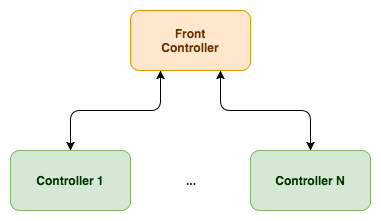
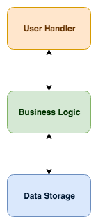
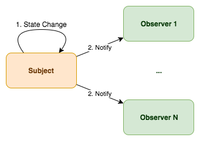
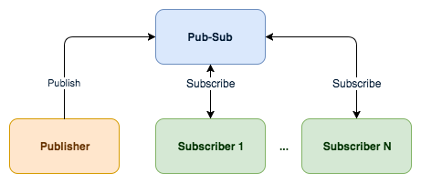

Architectural patterns
A collection of architectural patterns.
Front Controller
The Front Controller pattern is when all requests go for a single point in your architecture, called the handler, which then processes and dispatches the requests to other handlers. This is the pattern used by, for example, load balancers and reverses proxies:

It’s useful to scale horizontally, especially when the Front Controller is just routing requests, so it can handle a lot more requests than each separate controller, which need, some time to actually process each request.
This pattern is also very useful in helping other services not having to know where the controllers are and choosing the one with the lowest load that should handle the request faster.
Layered
The layered pattern is common in filesystems and operative systems (and virtual machines for that matter). This pattern consists of creating different layers that go from the raw data through to the data seen by a user:

The idea is to separate the complexity of the different layers, each one not having to know how the others do their tasks:
- Handling the data structures and storing them in a fast and secure way
- Manipulating the data structures and adding business logic to them
- Handling user requests and showing the data in a localised format
Observer
The Observer pattern is used every day in Node.js. It consists of a Subject, which maintains a list of dependents, called Observers, which get notified of any state change happening on the Subject:

You can see this happening every time in your web browser when some code (Observer) attaches an event listener to an object or interface element (Subject).
Publish-Subscribe
You have Subscribers that, as the name implies, subscribe to a specific event, or topic, or whatever you want to call it, and then you have Publishers that emit those events or send information to those topics:

The Pub-Sub pattern involves a third-party service and, unlike the Observer pattern, the Publishers have no knowledge of the Subscribers. This removes the need to handle and directly notify the Subscribers, thereby simplifying your code.
This pattern is quite useful for microservice communication. It involves a third party that abstracts the state change notification. Also, Publishers and Subscribers have no knowledge of each other.